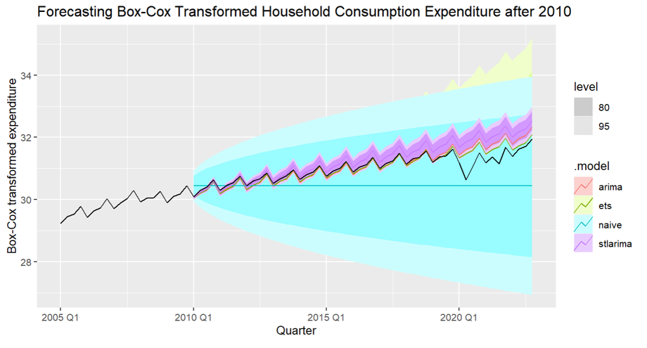

Household Expenditure Forecast Modelling
As part of my ECON2209 Business Forecasting assignment, the task was to produce forecasts on time-series data and compare the accuracy of multiple models (ARIMA, ETS, Naive, STL ARIMA).
Through this task I learned how to manipulate raw time-series data to account for seasonal variation by using Box-Cox transformations and STL decompositions. Using the plots produced by these transformations, I was also able to research and find real world evidence to back up my claims that the increasing variance was due to seasonality. I also learned how to use statistical tests (KPSS and AICc) to optimise an ARIMA model and then also use accuracy tests (RMSE and MAPE) to compare the accuracy of forecasts between the previously listed models.
You can read the full report below.